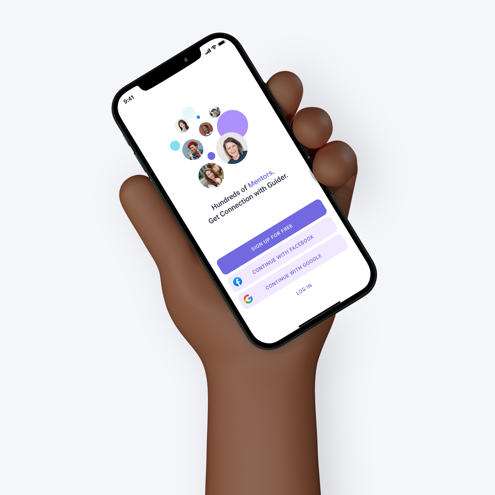

It began with my personal experience. As a non-design background graduate as well as an Asian woman, I felt frustrated because of a lack of connection and ambiguity of direction. Plus, I’ve been always supporting gender equality and thinking about how to make a better environment for people like me. So I decided to design for support.
